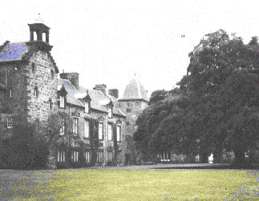
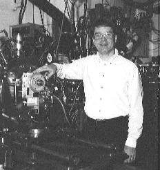

The Oxford International Women's Collective are organising a meeting in the University Museum on 10th March 1998 where Judith Howard and other friends and colleagues of Dorothy will talk about aspects of her life as scientist, peace campaigner and mother.
At the meeting they plan to launch a fund to create a permanent memorial
to Dorothy in the Oxford area where she carried out her research; this may
be a statue or a bust of Dorothy, they have not yet decided the exact form.
In collaboration with the Oxford branch of AWISE (see later article) they
are also considering funding an annual 'Dorothy Crowfoot Hodgkin Lecture',
to be presented in Oxford by a leading woman scientist. They hope the first
lecture will be given in 1999 as part of the Oxford International Women's
Festival.
BCA members are invited to send comments to the editor, who will
pass them on to the organising committee. Do you think Dorothy would have
wanted a statue?

The front cover is a view familiar to many generations of golf lovers,
the old Club House at the Royal and Ancient Golf Course, in St.Andrews.
The photograph on the left shows a more academic view of the
University of St.Andrews, taken by Steve Maginn, who kindly looked through
his collection to find an attractive view to encourage you to come to the
BCA meeting in St.Andrews.
It's that time of year again, when the BCA Spring Meeting approaches. This year will be the last Spring Meeting for two years, since we shall not be holding one in 1999, the year of the IUCr Meeting in Glasgow.
St. Andrews promises to be a most interesting venue, not just because of the golf possibilities, and I encourage you to make the effort to attend. We are going to try a couple of new ideas during this meeting. I have been long concerned by the fractionation of our subject into its membership groups, with a tendency for people only to attend those sessions of immediate interest to themselves. I feel strongly that there should be some areas of common interest to all. Consequently, this year we shall devote one session to a joint gathering of all the groups, in which there will be a speaker from each discipline. Details can be found on page 14. The second change is that we shall try a "Question Time" session. Participants will be asked to submit a question and a selection of these will be discussed during this session. I hope that everyone will attend and join in giving your opinions! I have seen this work very well in one of the group meetings, and there is no reason why we cannot apply this to the BCA as a whole.
I note from our web site that congratulations are due to two of our members. First of all Malcolm McMahon has received the award of two prestigious prizes: the EPDIC Award for 1997 for outstanding scientific contribution in the field of powder diffraction, and an award for outstanding research by a young scientist working at a European synchrotron. This follows his success in gaining a Royal Society award in 1996. Is there no stopping this man? Secondly, it is my pleasure once again to congratulate Lesley Dent Glasser, this time on winning the Institute of Physics Kelvin Medal and Prize for 1998.
See you all in St. Andrews.
Mike Glazer
From the Treasurer - BURSARIES FOR ST. ANDREWS
The following are in receipt of bursaries for the St. Andrews Spring Meeting.
The total value of the bursaries awarded is £ 3347 UK pounds.
THE TED MASLEN BURSARY AWARD

Prof. Malcolm Cooper, University of Warwick, of the European Synchrotron Radiation Society, (ESRS), recently sent me the following news item.
To mark the 50th anniversary of the discovery of synchrotron radiation the ESRS has awarded a prize of 1500 ecu (about £1000) for outstanding research by a young scientist working at a European synchrotron. The prize was to be awarded for work done since 1994 by someone under 35.
The winner was Malcolm McMahon, who is based at the Daresbury Laboratory. He has made a significant contribution to the study of materials at high pressures. It is a perfect example of how innovative experimental technique transforms into new science. Together with Professor Richard Nelmes he has cleverly exploited the advantages of image plate detectors and applying the Rietveld refinement technique. They have moved this area of work forward and away from the limitations that were imposed by the energy dispersive technique. Exciting results have been obtained at both Daresbury and the ESRF on the high pressure structures of InSb, Si, Ge, HgSc, and a host of materials. In an impressive array of publications, they reported new and unexpected structural complexities and settled what were old standing problems.
The prize was awarded in November 1997 at the International Conference on
Highlights in Synchrotron Radiation Research held in Grenoble, France, where
Malcolm gave an invited talk on his work.
The International Centre for Diffraction Data is pleased to announce the awarding of five Crystallography Scholarships for 1998. They are:
Ekaterina Anokhina's studies focus on "Niobium Oxochloride Cluster
Compounds: a Quest for Correlations between Configuration of the Clusters,
Framework Topology and Properties." Nathalie Audebrand will continue her
research of "Structure, Microstructure and Temperature-dependent Diffraction
Studies of New Cerium-based Precursors and Related Oxides." The exploration
of "Structural and Functional Aspects of Pore-forming Proteins by X-ray
Crystallography and Molecular Biology" will be conducted by Susanne Feil.
Christopher Theis will study "Ferroelectric Superlattices and Higher n
Aurivillius Phases Grown by MBE". "Investigation of the Formation,
Structure, and Magnetic Behaviour of Compounds in the
Nickel-Molybdenum-Nitrogen System" will be researched by K. Scott Weil.
The CCLRC Library and Information Services are now on the Internet; you can
contact the Daresbury library by sending email to
library@dl.ac.uk or the
RAL one is library@rl.ac.uk.
The library catalogue is accessible at URL
http://www.rl.ac.uk/admin/library/ visiting users can also access 97
on-line journals on the WWW. From January 1998 all CCLRC technical reports are also
online and can be downloaded either from the library catalogue or from the
lists of recent CCLRC reports.
The International Union of Crystallography is pleased to invite nominations for the Ewald Prize for outstanding contributions to the science of crystallography. The Prize is named after Professor Paul P. Ewald, in recognition of his significant contributions to the foundations of crystallography and to the founding of the International Union of Crystallography. Professor Ewald was the President of the Provisional International Crystallographic Committee from 1946 to 1948, the first Editor of the IUCr publication Acta Crystallographica from 1948 to 1959 and the President of the IUCr from 1960 to 1963.
The Prize consists of a medal, a certificate and a financial award, and is presented once every three years during the triennial International Congresses of Crystallography. The recipients to date are as follows:
Year Place Recipients
1987 Perth, Australia Professor J.M. Cowley and Dr A.F. Moodie
1990 Bordeaux, France Professor B.K. Vainshtein
1993 Beijing, China Professor N. Kato
1996 Seattle, USA Professor M.G. Rossmann
The fifth Prize, for which nominations are now being invited, will be presented at the XVIII Congress in Glasgow, UK, in August 1999.
Scientists who have made contributions of exceptional distinction to the science of crystallography are eligible for the Ewald Prize, irrespective of nationality, age or experience. The Selection Committee will give careful attention to the nominations of outstanding scientists who have not yet won a major prize. Either an exceptionally distinguished scientific career or a major scientific accomplishment may be recognized. Current members of the Selection Committee and the President of the IUCr are not eligible. No restrictions are placed on the time or the means of publication of the nominee's contributions. The Prize may be shared by more than one contributor, but not more than three, to the same scientific achievement.
Nominations for the Ewald Prize should be submitted in writing, preferably
using the Ewald Prize Nomination Form and accompanied by supporting
documentation, to the Executive Secretary of the International Union of
Crystallography, 2 Abbey Square, Chester CH1 2HU, England, from whom copies
of the Nomination Form and file names of the Selection Committee may be
obtained.
The closing date for nominations is 31 August 1998.
E.Baker (President) S.Larsen (General Secretary)
New value in old science books
A plea for unwanted science books comes from John Lawson, who retired from RAL ten years ago and Ron Newport, who recently retired from Daresbury. They work as voluntary helpers at the OXFAM bookshop in Oxford and are looking for any old science books. Whatever their age, they are all saleable. Contact John on (01235) 521516 or Ron on (01235) 848424 to arrange collection if you live in the Oxford area. Otherwise contact your local OXFAM branch. OXFAM also operate a book search service between their shops.
Page last updated 19 Apr 1999
 Click here to return to BCA homepage
Click here to return to BCA homepage